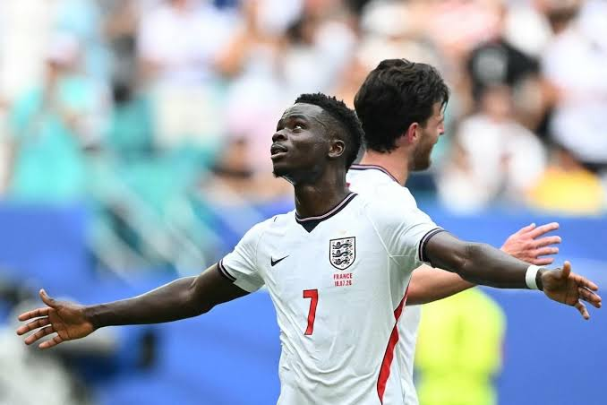
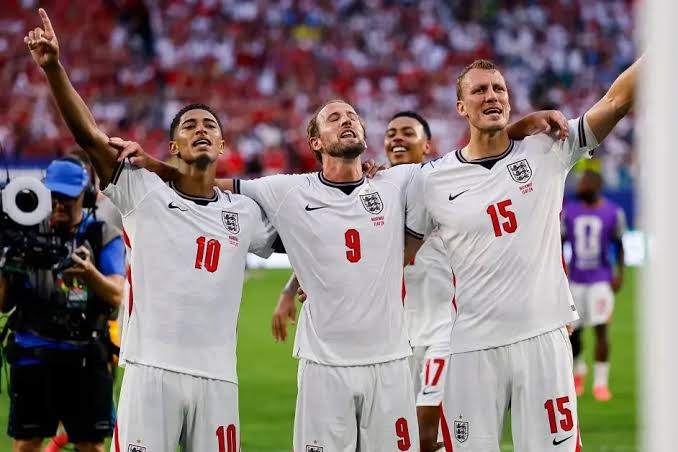
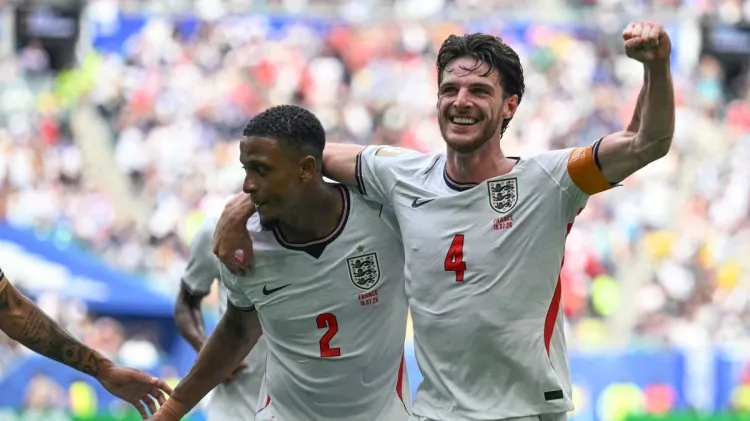

3ª Colocada
Inglaterra

Sobre o País
A Inglaterra, berço histórico da revolução industrial e do futebol moderno, possui um legado cultural extraordinário na música, na ciência, na literatura e nas artes. Como nação constituinte do Reino Unido, sedia a Premier League, o campeonato nacional de clubes de maior sucesso comercial e esportivo do planeta, o que fomenta uma paixão nacional incessante e altamente fervorosa pelo futebol.
Resumo Histórico na Copa do Mundo
Como inventores do esporte bretão, os ingleses alcançaram seu apogeu internacional em 1966, quando sediaram e venceram o torneio. Sob o comando de Alf Ramsey e jogando diante da realeza britânica no Estádio de Wembley, a seleção de craques como Bobby Charlton e Bobby Moore derrotou a Alemanha Ocidental por 4 a 2 em uma prorrogação épica, marcada pelo controverso e decisivo gol de Geoff Hurst. Embora carregue a mística do bordão "It's Coming Home", a Inglaterra continua buscando seu segundo troféu mundial, mantendo elencos formados por astros globais de primeira linha e gerando campanhas competitivas de alto impacto técnico em todas as Copas recentes.
Momentos Icônicos


